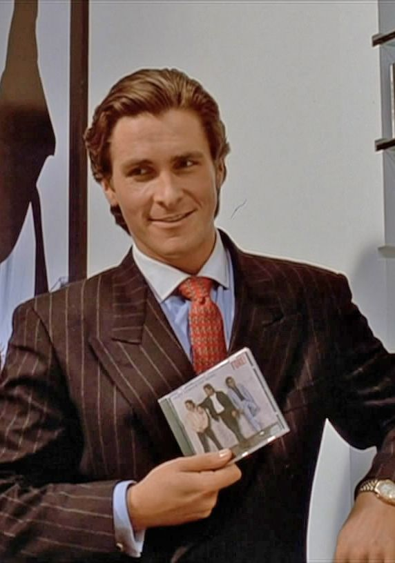
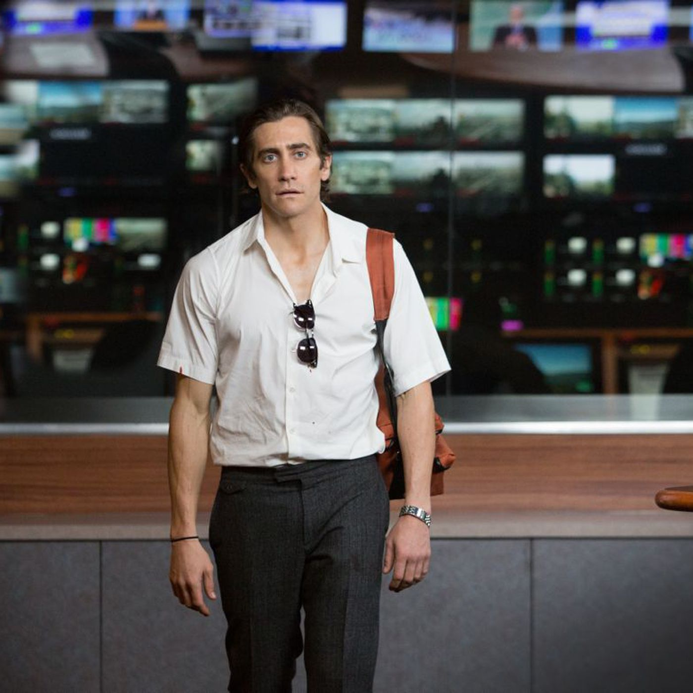

01
American Psycho
In New York City in 1987, a handsome, young urban professional, Patrick Bateman (Christian Bale), lives a second life as a gruesome serial killer by night. The cast is filled by the detective (Willem Dafoe).
Read More

02
Nightcrawler
Los Angeles denizen Louis Bloom (Jake Gyllenhaal) survives by scavenging and petty theft. He stumbles into a new career as a cameraman and -- armed with a camcorder and police scanner -- begins nocturnal forays across the city in search of shocking and grisly crimes. When he catches the eye of a shopworn news director (Rene Russo) who welcomes the chance to raise her station's ratings, Louis goes to increasingly greater lengths to catch the "money shot.".
Read More